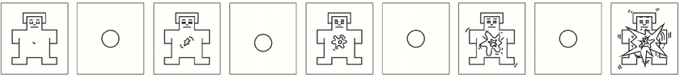

<!DOCTYPE html>
<html lang="en">

<head>
    <meta charset="UTF-8">
    <title>Swipe Study – Active / Passive (Mobile, Single-Trial)</title>
    <meta name="viewport" content="width=device-width, initial-scale=1.0, user-scalable=no">

    <!-- jsPsych v6 -->
    <script src="https://unpkg.com/jspsych@6.3.1/jspsych.js"></script>
    <link href="https://unpkg.com/jspsych@6.3.1/css/jspsych.css" rel="stylesheet" />
    <script src="https://unpkg.com/jspsych@6.3.1/plugins/jspsych-html-keyboard-response.js"></script>
    <script src="https://unpkg.com/jspsych@6.3.1/plugins/jspsych-preload.js"></script>
    <script src="https://unpkg.com/jspsych@6.3.1/plugins/jspsych-survey-likert.js"></script>
    <script src="https://unpkg.com/jspsych@6.3.1/plugins/jspsych-survey-multi-choice.js"></script>
    <script src="https://unpkg.com/jspsych@6.3.1/plugins/jspsych-survey-multi-select.js"></script>


    <style>
        html,
        body {
            margin: 0;
            padding: 0;
            width: 100%;
            height: 100dvh;
            background-color: #000;
            color: #fff;
            overflow-x: hidden;
            overflow-y: hidden;
            /* 防止页面滚动 */
            touch-action: pan-y;
            overscroll-behavior: contain;
        }

        #jspsych-target {
            width: 100vw;
            height: 100dvh;
            touch-action: pan-y;
        }

        .video-container {
            width: 100vw;
            height: 100dvh;
            position: relative;
            background-color: #000;
            overflow: hidden;
        }

        .video-container video {
            position: absolute;
            top: 50%;
            left: 50%;
            transform: translate(-50%, -50%);
            /* 绝对居中 */

            height: 100%;
            /* 竖屏视频：高度铺满 */
            width: auto;
            /* 宽度按比例自适应 */
            max-height: 100%;
            max-width: none;

            object-fit: cover;
            background-color: #000;
        }

        #start-screen {
            position: absolute;
            top: 50%;
            left: 50%;
            transform: translate(-50%, -50%);
            /* 绝对几何中心 */

            width: 100%;
            display: flex;
            flex-direction: column;
            align-items: center;
            text-align: center;
            color: white;
            padding: 20px;
            box-sizing: border-box;
        }

        .center-text {
            text-align: center;
        }

        .arrow {
            font-size: 60px;
            margin-bottom: 20px;
        }

        /* ===== 强化 jsPsych survey-likert 的可读性 ===== */
        .jspsych-survey-likert-statement {
            font-size: 20px;
            /* 问题本身更大一点 */
            color: #ffffff;
            /* 纯白 */
            margin-bottom: 10px;
        }

        .jspsych-survey-likert-opts {
            margin-top: 6px;
        }

        /* 每个刻度下面的文字（1-5 / 1-9） */
        .jspsych-survey-likert-opts li {
            font-size: 16px;
            /* 刻度文字变大 */
            color: #ffffff;
            /* 纯白 */
            opacity: 1;
            /* 去掉灰淡效果 */
        }

        /* 有些版本文字放在 span 里，再保险一下 */
        .jspsych-survey-likert-opts li span,
        .jspsych-survey-likert-opts li label {
            font-size: 16px;
            color: #ffffff;
            opacity: 1;
        }

        /* 把两端的刻度（1 和最高分）加粗，更醒目 */
        .jspsych-survey-likert-opts li:first-child,
        .jspsych-survey-likert-opts li:last-child {
            font-weight: 600;
        }
    </style>
</head>

<body>

    <div id="jspsych-target"></div>

    <script>
        /************* 工具：读取 URL 参数 *************/
        function getUrlParam(name, def) {
            var url = new URL(window.location.href);
            return url.searchParams.get(name) || def;
        }

        var CONDITION = getUrlParam('cond', 'active');  // 'active' | 'ps' | 'pn'
        var TRACE_ID = getUrlParam('trace', '1');      // yoke trace id，给 ps / pn 用

        /************* 通用量表标签 *************/
        var LIKERT_5 = [
            "1 - Strongly disagree",
            "2",
            "3",
            "4",
            "5 - Strongly agree"
        ];

        /************* 视频序列 *************/
        var VIDEO_SEQUENCE = [
            'video1.mp4',
            'video2.mp4',
            'video3.mp4',
            'video4.mp4',
            'video5.mp4'
        ];
        var N_VIDEOS = VIDEO_SEQUENCE.length;

        /************* Yoke traces：示例，之后请用 active dwellTimes 来替换 *************/
        var YOKED_TRACES = {
            "1": [3000, 4500, 4000, 3500, 5000]  // 单位：ms
            // 后续可以添加 "2": [...], "3": [...] 等
        };

        var yokedDurations = null;
        if (CONDITION === 'ps' || CONDITION === 'pn') {
            yokedDurations = YOKED_TRACES[TRACE_ID];
            if (!yokedDurations || yokedDurations.length !== N_VIDEOS) {
                alert('YOKED_TRACES[' + TRACE_ID + '] 未正确设置或长度不是 ' + N_VIDEOS);
            }
        }

        // 可选兜底：阻止明显的横向滑动导致页面晃动
        (function () {
            var startX = null;
            var startY = null;

            document.addEventListener('touchstart', function (e) {
                if (!e.touches || e.touches.length === 0) return;
                startX = e.touches[0].clientX;
                startY = e.touches[0].clientY;
            }, { passive: true });

            document.addEventListener('touchmove', function (e) {
                if (startX === null || startY === null) return;
                if (!e.touches || e.touches.length === 0) return;

                var dx = e.touches[0].clientX - startX;
                var dy = e.touches[0].clientY - startY;

                // 如果横向位移明显大于纵向，就认为是“横滑”，阻止页面跟着动
                if (Math.abs(dx) > Math.abs(dy) && Math.abs(dx) > 10) {
                    e.preventDefault();
                }
            }, { passive: false });
        })();

        /************* Swipe 检测工具：向上滑 *************/
        function installSwipeUpHandler(callback, threshold) {
            threshold = threshold || 50; // 至少上滑 50px
            var startY = null;

            function onTouchStart(e) {
                if (!e.touches || e.touches.length === 0) return;
                startY = e.touches[0].clientY;
            }

            function onTouchEnd(e) {
                if (startY === null) return;
                var endY = (e.changedTouches && e.changedTouches[0].clientY) || startY;
                var dy = startY - endY; // 向上滑 dy > 0
                if (dy > threshold) {
                    callback();
                }
                startY = null;
            }

            document.addEventListener('touchstart', onTouchStart);
            document.addEventListener('touchend', onTouchEnd);

            // 返回清理函数
            return function removeSwipeHandler() {
                document.removeEventListener('touchstart', onTouchStart);
                document.removeEventListener('touchend', onTouchEnd);
            };
        }

        /************* 初始化 timeline *************/
        var timeline = [];

        /************* 新增：预加载所有视频（带进度条） *************/
        var preload_trial = {
            type: 'preload',
            video: VIDEO_SEQUENCE,               // 这里将来换成你60条视频的数组
            show_progress_bar: true,
            message: 'Loading videos. Please wait…',
            error_message: 'Some videos failed to load, but the study will continue.',
            continue_after_error: true,          // 万一某条加载失败，不整个卡死
            max_load_time: 60000                // 最长等 60 秒（10 分钟），可按需要调整
        };
        timeline.push(preload_trial);

        /************* 第 0 页：点击开始 *************/
        var unlock_trial = {
            type: 'html-keyboard-response',
            stimulus: `
      <div style="height:100vh;display:flex;flex-direction:column;justify-content:center;align-items:center;color:white;padding:20px;box-sizing:border-box;">
        <p style="font-size:22px;text-align:center;margin-bottom:20px;">
          You will now watch a series of short videos.<br><br>
          Current condition:<b>${CONDITION.toUpperCase()}</b>${(CONDITION !== 'active') ? ('，trace=' + TRACE_ID) : ''}
        </p>
        <p style="font-size:16px;text-align:center;margin-top:10px;">
          Tap anywhere on the screen to begin.
        </p>
      </div>
    `,
            choices: jsPsych.NO_KEYS,
            on_load: function () {
                function tapHandler() {
                    document.removeEventListener('click', tapHandler);
                    jsPsych.finishTrial();
                }
                document.addEventListener('click', tapHandler);
            }
        };
        timeline.push(unlock_trial);

        /************* ACTIVE：单 trial 播整条视频流（上滑切 + 播完自动切） *************/
        var active_swipe_trial = {
            type: 'html-keyboard-response',
            stimulus: `
      <div class="video-container" id="container-main">
        <div id="start-screen">
          <div class="arrow">↑</div>
          <p class="center-text" style="font-size:22px;">
            Swipe up to watch the first video.
          </p>
          <p class="center-text" style="font-size:14px;opacity:0.7;margin-top:20px;">
            During the task, swipe up to move to the next video. <br>
            If you do nothing, the next video will play automatically when the current one ends.
          </p>
        </div>
        <video id="main-video"
               src=""
               playsinline
               style="display:none;"></video>
      </div>
    `,
            choices: jsPsych.NO_KEYS,
            on_load: function () {
                var container = document.getElementById('container-main');
                var startScreen = document.getElementById('start-screen');
                var video = document.getElementById('main-video');

                var currentIndex = -1;
                var currentStartTime = null;
                var dwellTimes = [];
                var endTypes = [];
                var swipeRemover = null;
                var inTransition = false;

                video.muted = false;
                video.volume = 1.0;

                function startVideo(i) {
                    if (i < 0 || i >= N_VIDEOS) return;
                    currentIndex = i;
                    currentStartTime = performance.now();
                    inTransition = false;

                    video.src = VIDEO_SEQUENCE[i];
                    video.style.display = 'block';
                    video.currentTime = 0;

                    var p = video.play();
                    if (p && p.catch) {
                        p.catch(function (err) {
                            console.log('play() 被拦截 (active, index ' + i + '):', err);
                        });
                    }
                }

                function goToNextVideo(trigger) {
                    if (inTransition) return;
                    inTransition = true;

                    if (currentIndex === -1) {
                        // 从 start-screen 进入第一个视频
                        startScreen.style.display = 'none';
                        startVideo(0);
                        return;
                    }

                    var now = performance.now();
                    var dwell = now - currentStartTime;
                    dwellTimes.push(dwell);
                    endTypes.push(trigger);

                    try { video.pause(); } catch (e) { }

                    if (currentIndex < N_VIDEOS - 1) {
                        startVideo(currentIndex + 1);
                    } else {
                        if (swipeRemover) swipeRemover();

                        for (var k = 0; k < dwellTimes.length; k++) {
                            jsPsych.data.write({
                                condition: 'active',
                                video_index: k,
                                video_file: VIDEO_SEQUENCE[k],
                                dwell_ms: dwellTimes[k],
                                end_type: endTypes[k]
                            });
                        }

                        jsPsych.finishTrial({
                            condition: 'active',
                            n_videos: N_VIDEOS,
                            dwell_times_ms: dwellTimes,
                            end_types: endTypes,
                            video_sequence_used: VIDEO_SEQUENCE
                        });
                    }
                }

                // 上滑 -> 下一条
                swipeRemover = installSwipeUpHandler(function () {
                    goToNextVideo('swipe');
                }, 50);

                // 播放结束 -> 自动切
                video.onended = function () {
                    goToNextVideo('auto');
                };
            },
            on_finish: function () {
                document.ontouchstart = null;
                document.ontouchend = null;
            }
        };

        /************* PASSIVE SWIPE：Tₐ 停止 → 黑屏提示上滑 *************/
        var passive_swipe_trial = {
            type: 'html-keyboard-response',
            stimulus: `
      <div class="video-container" id="container-main">
        <div id="start-screen"
             style="width:100%;height:100%;display:flex;flex-direction:column;justify-content:center;align-items:center;">
          <div class="arrow">↑</div>
          <p class="center-text" style="font-size:22px;">
            Swipe up to watch the first video.
          </p>
          <p class="center-text" style="font-size:14px;opacity:0.7;margin-top:20px;">
            Please focus on the video. Each video will stop at a preset time.<br>
            When the screen turns black and the arrow appears, swipe up to continue.
          </p>
        </div>

        <!-- Main video -->
        <video id="main-video"
               src=""
               playsinline
               style="display:none;"></video>

        <!-- Black transition screen -->
        <div id="action-screen"
             style="display:none;position:absolute;top:0;left:0;width:100%;height:100%;
                    background:#000;flex-direction:column;justify-content:center;align-items:center;">
          <div class="arrow">↑</div>
          <p class="center-text" style="font-size:22px;">
            Swipe up to continue to the next video.
          </p>
        </div>
      </div>
    `,
            choices: jsPsych.NO_KEYS,
            on_load: function () {
                var container = document.getElementById('container-main');
                var startScreen = document.getElementById('start-screen');
                var video = document.getElementById('main-video');
                var actionScreen = document.getElementById('action-screen');

                var currentIndex = -1;
                var currentStartTime = null;
                var dwellTimes = [];
                var viewTimes = []; // view 阶段（Tₐ）的时长
                var actionRTs = []; // 从 Tₐ 到 swipe 的时间
                var swipeRemover = null;
                var inTransition = false;
                var phase = 'start';  // 'start' | 'view' | 'action'
                var actionStartTime = null;
                var tTimeoutId = null;     // Tₐ 定时器

                video.muted = false;
                video.volume = 1.0;

                function startVideo(i) {
                    if (i < 0 || i >= N_VIDEOS) return;
                    currentIndex = i;
                    currentStartTime = performance.now();
                    phase = 'view';
                    inTransition = false;
                    actionStartTime = null;

                    video.src = VIDEO_SEQUENCE[i];
                    video.style.display = 'block';
                    video.currentTime = 0;
                    actionScreen.style.display = 'none';

                    var targetDwell = yokedDurations[i]; // Tₐ

                    var p = video.play();
                    if (p && p.catch) {
                        p.catch(function (err) {
                            console.log('play() 被拦截 (ps, index ' + i + '):', err);
                        });
                    }

                    // 在 Tₐ 时刻自动停止视频 + 切到黑屏提示
                    if (tTimeoutId) clearTimeout(tTimeoutId);
                    tTimeoutId = setTimeout(function () {
                        phase = 'action';
                        actionStartTime = performance.now();

                        try { video.pause(); } catch (e) { }
                        video.style.display = 'none';
                        actionScreen.style.display = 'flex';
                    }, targetDwell);
                }

                function goToNextVideoFromAction() {
                    if (inTransition) return;
                    if (phase !== 'action') return; // 只有黑屏阶段才响应上滑

                    inTransition = true;

                    var now = performance.now();
                    var totalDwell = now - currentStartTime;
                    var viewDwell = yokedDurations[currentIndex];
                    var actionRT = actionStartTime ? (now - actionStartTime) : null;

                    dwellTimes.push(totalDwell);
                    viewTimes.push(viewDwell);
                    actionRTs.push(actionRT);

                    if (tTimeoutId) {
                        clearTimeout(tTimeoutId);
                        tTimeoutId = null;
                    }

                    if (currentIndex < N_VIDEOS - 1) {
                        startVideo(currentIndex + 1);
                    } else {
                        if (swipeRemover) swipeRemover();

                        for (var k = 0; k < dwellTimes.length; k++) {
                            jsPsych.data.write({
                                condition: 'passive_swipe',
                                trace_id: TRACE_ID,
                                video_index: k,
                                video_file: VIDEO_SEQUENCE[k],
                                target_dwell_ms: yokedDurations[k],
                                total_dwell_ms: dwellTimes[k],
                                view_dwell_ms: viewTimes[k],
                                action_rt_ms: actionRTs[k]
                            });
                        }

                        jsPsych.finishTrial({
                            condition: 'passive_swipe',
                            trace_id: TRACE_ID,
                            n_videos: N_VIDEOS,
                            dwell_times_ms: dwellTimes,
                            view_times_ms: viewTimes,
                            action_rts_ms: actionRTs,
                            video_sequence_used: VIDEO_SEQUENCE
                        });
                    }
                }

                // 上滑：start-screen -> 第一个视频；黑屏下 -> 进入下一条
                swipeRemover = installSwipeUpHandler(function () {
                    if (currentIndex === -1) {
                        // 从 start-screen 进入第一个视频
                        startScreen.style.display = 'none';
                        startVideo(0);
                    } else {
                        // 只有处于 action 阶段（黑屏提示）时才响应
                        if (phase === 'action') {
                            goToNextVideoFromAction();
                        }
                    }
                }, 50);

                // 在 ps 条件下，不在 onended 做任何事（逻辑由 Tₐ 定时器控制）
                video.onended = function () {
                    // 可以留空，或者 log 一下
                    console.log('Video ended before Tₐ in ps, index:', currentIndex);
                };
            },
            on_finish: function () {
                document.ontouchstart = null;
                document.ontouchend = null;
            }
        };

        /************* PASSIVE NON-SWIPE：严格被动，按 Tₐ 自动切换，不响应上滑 *************/
        var passive_non_swipe_trial = {
            type: 'html-keyboard-response',
            stimulus: `
      <div class="video-container" id="container-main">
        <div id="start-screen"
             style="width:100%;height:100%;display:flex;flex-direction:column;justify-content:center;align-items:center;">
          <p class="center-text" style="font-size:22px;">
            You will now <b>passively watch</b> a series of videos.<br>
            Please do not swipe or tap. The videos will advance automatically.
          </p>
        </div>
        <video id="main-video"
               src=""
               playsinline
               style="display:none;"></video>
      </div>
    `,
            choices: jsPsych.NO_KEYS,
            on_load: function () {
                var container = document.getElementById('container-main');
                var startScreen = document.getElementById('start-screen');
                var video = document.getElementById('main-video');

                var currentIndex = -1;
                var currentStartTime = null;
                var dwellTimes = [];
                var tTimeoutId = null;

                video.muted = false;
                video.volume = 1.0;

                function startVideo(i) {
                    if (i < 0 || i >= N_VIDEOS) return;
                    currentIndex = i;
                    currentStartTime = performance.now();

                    video.src = VIDEO_SEQUENCE[i];
                    video.style.display = 'block';
                    video.currentTime = 0;

                    var p = video.play();
                    if (p && p.catch) {
                        p.catch(function (err) {
                            console.log('play() 被拦截 (pn, index ' + i + '):', err);
                        });
                    }

                    var targetDwell = yokedDurations[i];

                    if (tTimeoutId) clearTimeout(tTimeoutId);
                    tTimeoutId = setTimeout(function () {
                        goToNextVideoAuto();
                    }, targetDwell);
                }

                function goToNextVideoAuto() {
                    var now = performance.now();
                    var dwell = now - currentStartTime;
                    dwellTimes.push(dwell);

                    try { video.pause(); } catch (e) { }

                    if (currentIndex < N_VIDEOS - 1) {
                        startVideo(currentIndex + 1);
                    } else {
                        if (tTimeoutId) {
                            clearTimeout(tTimeoutId);
                            tTimeoutId = null;
                        }

                        for (var k = 0; k < dwellTimes.length; k++) {
                            jsPsych.data.write({
                                condition: 'passive_non_swipe',
                                trace_id: TRACE_ID,
                                video_index: k,
                                video_file: VIDEO_SEQUENCE[k],
                                target_dwell_ms: yokedDurations[k],
                                dwell_ms: dwellTimes[k]
                            });
                        }

                        jsPsych.finishTrial({
                            condition: 'passive_non_swipe',
                            trace_id: TRACE_ID,
                            n_videos: N_VIDEOS,
                            dwell_times_ms: dwellTimes,
                            video_sequence_used: VIDEO_SEQUENCE
                        });
                    }
                }

                // 不安装 swipe handler，完全忽略上滑
                // 只在 start-screen 后自动开始
                setTimeout(function () {
                    startScreen.style.display = 'none';
                    startVideo(0);
                }, 1000); // 1 秒后开始，也可以改成点击触发

                video.onended = function () {
                    // 理论上不会依赖 onended，而是用 Tₐ；这里可以仅做日志
                    console.log('Video ended before Tₐ in pn, index:', currentIndex);
                };
            },
            on_finish: function () {
                document.ontouchstart = null;
                document.ontouchend = null;
            }
        };

        /************* Measures 1：Post-viewing self-report & checks *************/
        var post_view_likert_trial = {
            type: 'survey-likert',
            preamble: `
    <div style="padding:10px 5px 0 5px;">
      <p style="font-size:18px; text-align:left;">
        You have finished watching the video feed.<br><br>
        Please answer the following questions about your experience.
      </p>
    </div>
  `,
            questions: [
                {
                    prompt: "I felt that I was in control of when the next video appeared.",
                    name: "agency_control",
                    labels: LIKERT_5,
                    required: true
                },
                {
                    prompt: "It felt like the system decided when to move to the next video, not me.",
                    name: "agency_system",
                    labels: LIKERT_5,
                    required: true
                },
                {
                    prompt: "I felt I was continuing out of habit rather than deliberate choice.",
                    name: "habit_vs_deliberate",
                    labels: LIKERT_5,
                    required: true
                },
                {
                    prompt: "If the task had not ended, I would probably have kept going for quite a while.",
                    name: "continue_watching",
                    labels: LIKERT_5,
                    required: true
                },
                {
                    prompt: "I found the videos interesting to watch.",
                    name: "interest",
                    labels: LIKERT_5,
                    required: true
                },
                {
                    prompt: "I found the videos boring.",
                    name: "boredom",
                    labels: LIKERT_5,
                    required: true
                },
                {
                    prompt: `
            <div style="text-align:left;">
              <p>Please indicate how you felt overall while watching the videos (valence).</p>
              
            </div>
          `,
                    name: "sam_valence",
                    labels: ["1", "2", "3", "4", "5", "6", "7", "8", "9"],
                    required: true
                },
                {
                    prompt: `
            <div style="text-align:left;">
              <p>Please indicate how aroused or stimulated you felt overall.</p>
              
            </div>
          `,
                    name: "sam_arousal",
                    labels: ["1", "2", "3", "4", "5", "6", "7", "8", "9"],
                    required: true
                },
                {
                    // attention check：用 1–5
                    prompt: "To show that you are paying attention, please select ‘4’ for this item.",
                    name: "attention_check_1to5",
                    labels: [
                        "1",
                        "2",
                        "3",
                        "4",
                        "5"
                    ],
                    required: true
                }
            ],
            randomize_question_order: false
        };


        /************* Measures 2：Recognition memory（示例：一页 4 张图） *************/
        var RECOG_ITEMS = [
            { id: "rec1", file: "rec_real_01.png", status: "real" },
            { id: "rec2", file: "rec_real_02.png", status: "real" },
            { id: "rec3", file: "rec_real_03.png", status: "real" },
            { id: "rec4", file: "rec_real_04.png", status: "real" }
        ];

        // 构建 HTML：4 张图 + checkbox
        function buildRecognitionHTML() {
            var html = `
        <div style="width:100vw;height:100vh;display:flex;flex-direction:column;justify-content:flex-start;align-items:center;color:white;padding:10px;box-sizing:border-box;">
          <p style="font-size:18px;text-align:left;width:100%;max-width:500px;margin-bottom:10px;">
            On this page you will see four still images taken from short videos.<br>
            Please tick the videos that you remember seeing in the feed.
          </p>
        <div style="display:flex;flex-wrap:wrap;justify-content:center;gap:10px;width:100%;max-width:500px;">
      `;

            RECOG_ITEMS.forEach(function (item) {
                html += `
        <div style="width:48%;display:flex;flex-direction:column;align-items:center;margin-bottom:10px;">
          
          <label style="font-size:14px;">
            <input type="checkbox" id="${item.id}" style="margin-right:5px;">
            I saw this video
          </label>
        </div>
      `;
            });

            html += `
      </div>
        <button id="rec-next-btn"
            style="margin-top:15px;padding:10px 20px;font-size:16px;border-radius:8px;border:none;background:#444;color:#fff;">
          Continue
        </button>
      </div>
    `;
            return html;
        }

        var recognition_trial = {
            type: 'html-keyboard-response',
            stimulus: buildRecognitionHTML,
            choices: jsPsych.NO_KEYS,
            on_load: function () {
                var btn = document.getElementById('rec-next-btn');
                btn.addEventListener('click', function () {
                    // 读取每个 checkbox 是否勾选
                    var selections = {};
                    RECOG_ITEMS.forEach(function (item) {
                        var checked = document.getElementById(item.id).checked;
                        selections[item.id] = {
                            checked: checked,
                            file: item.file,
                            status: item.status
                        };
                    });
                    jsPsych.finishTrial({
                        recognition_responses: selections
                    });
                });
            }
        };

        /************* Measures 3：Delay Discounting（简版示例） *************/

        // TODO: 在正式版本中，把 items 扩展到 27 个，并用 Kirby 的标准金额和延迟
        var DD_ITEMS = [
            {
                name: "dd1",
                prompt: "1. Would you prefer £54 today or £55 in 117 days?",
                options: ["£54 today", "£55 in 117 days"]
            },
            {
                name: "dd2",
                prompt: "2. Would you prefer £55 today or £75 in 61 days?",
                options: ["£55 today", "£75 in 61 days"]
            },
            {
                name: "dd3",
                prompt: "3. Would you prefer £19 today, or £25 in 53 days?",
                options: ["£19 today", "£25 in 53 days"]
            },
            {
                name: "dd4",
                prompt: "4. Would you prefer £31 today, or £85 in 7 days?",
                options: ["£31 today", "£85 in 7 days?"]
            },
            {
                name: "dd5",
                prompt: "5. Would you prefer £14 today, or £25 in 19 days?",
                options: ["£14 today", "£25 in 19 days"]
            },
            {
                name: "dd6",
                prompt: "6. Would you prefer £47 today, or £50 in 160 days?",
                options: ["£47 today", "£50 in 160 days"]
            },
            {
                name: "dd7",
                prompt: "7. Would you prefer £15 today, or £35 in 13 days?",
                options: ["£15 today", "£35 in 1 month"]
            },
            {
                name: "dd8",
                prompt: "8. Would you prefer £25 today, or £60 in 14 days?",
                options: ["£25 today", "£60 in 4 months"]
            },
            {
                name: "dd9",
                prompt: "9. Would you prefer £78 today, or £80 in 162 days?",
                options: ["£78 today", "£80 in 162 days"]
            },
            {
                name: "dd10",
                prompt: "10. Would you prefer £40 today, or £55 in 62 days?",
                options: ["£40 today", "£55 in 62 days"]
            },
            {
                name: "dd11",
                prompt: "11. Would you prefer £11 today, or £30 in 7 days?",
                options: ["£11 today", "£30 in 7 days"]
            },
            {
                name: "dd12",
                prompt: "12. Would you prefer £67 today, or £75 in 119 days?",
                options: ["£67 today", "£75 in 119 days"]
            },
            {
                name: "dd13",
                prompt: "13. Would you prefer £34 today, or £35 in 186 days?",
                options: ["£34 today", "£35 in 186 days"]
            },
            {
                name: "dd14",
                prompt: "14. Would you prefer £27 today, or £50 in 21 days?",
                options: ["£27 today", "£50 in 21 days"]
            },
            {
                name: "dd15",
                prompt: "15. Would you prefer £69 today, or £85 in 91 days?",
                options: ["£69 today", "£85 in 91 days"]
            },
            {
                name: "dd16",
                prompt: "16. Would you prefer £49 today, or £60 in 89 days?",
                options: ["£49 today", "£60 in 89 days"]
            },
            {
                name: "dd17",
                prompt: "17. Would you prefer £80 today, or £85 in 157 days?",
                options: ["£80 today", "£85 in 157 days"]
            },
            {
                name: "dd18",
                prompt: "18. Would you prefer £24 today, or £35 in 29 days?",
                options: ["£24 today", "£35 in 29 days"]
            },
            {
                name: "dd19",
                prompt: "19. Would you prefer £33 today, or £80 in 14 days?",
                options: ["£33 today", "£80 in 14 days"]
            },
            {
                name: "dd20",
                prompt: "20. Would you prefer £28 today, or £30 in 179 days?",
                options: ["£28 today", "£30 in 179 days"]
            },
            {
                name: "dd21",
                prompt: "21. Would you prefer £34 today, or £50 in 30 days?",
                options: ["£34 today", "£50 in 30 days"]
            },
            {
                name: "dd22",
                prompt: "22. Would you prefer £25 today, or £30 in 80 days?",
                options: ["£25 today", "£30 in 80 days"]
            },
            {
                name: "dd23",
                prompt: "23. Would you prefer £41 today, or £75 in 20 days?",
                options: ["£41 today", "£75 in 20 days"]
            },
            {
                name: "dd24",
                prompt: "24. Would you prefer £54 today, or £60 in 111 days?",
                options: ["£54 today", "£60 in 111 days"]
            },
            {
                name: "dd25",
                prompt: "25. Would you prefer £54 today, or £80 in 30 days?",
                options: ["£54 today", "£80 in 30 days"]
            },
            {
                name: "dd26",
                prompt: "26. Would you prefer £22 today, or £25 in 136 days?",
                options: ["£22 today", "£25 in 136 days"]
            },
            {
                name: "dd27",
                prompt: "27. Would you prefer £20 today, or £55 in 7 days?",
                options: ["£20 today", "£55 in 7 days"]
            }
        ];

        var delay_discount_trial = {
            type: 'survey-multi-choice',
            preamble: `
        <div style="padding:10px 5px 0 5px;">
          <p style="font-size:18px;text-align:left;">
            In this final part, you will make 27 choices.<br>
            For each of the choices, please indicate which reward you would prefer:<br>
            the smaller reward today, or the larger reward in the specified number of days.<br><br>
            Please answer as if these choices were real.
          </p>
        </div>
      `,
            questions: DD_ITEMS.map(function (item) {
                return {
                    prompt: item.prompt,
                    name: item.name,
                    options: item.options,
                    required: true
                };
            }),
            randomize_question_order: false
        };


        /************* 根据 CONDITION 选择对应的 trial *************/
        if (CONDITION === 'active') {
            timeline.push(active_swipe_trial);
        } else if (CONDITION === 'ps') {
            timeline.push(passive_swipe_trial);
        } else if (CONDITION === 'pn') {
            timeline.push(passive_non_swipe_trial);
        } else {
            alert('未知条件 cond=' + CONDITION);
        }

        /************* 在 viewing 之后追加 Measures *************/
        timeline.push(post_view_likert_trial);
        timeline.push(recognition_trial);
        timeline.push(delay_discount_trial);

        /************* 结束页 *************/
        var end_trial = {
            type: 'html-keyboard-response',
            stimulus: `
    <div class="video-container">
      <div style="width:100%;height:100%;display:flex;flex-direction:column;justify-content:center;align-items:center;">
        <p class="center-text" style="font-size:24px;">
          All tasks have been completed.<br><br>
          Thank you for your participation!
        </p>
        <p class="center-text" style="font-size:14px;opacity:0.8;margin-top:10px;">
          Click the button below to download your data.
        </p>
        <button id="download-btn"
                style="margin-top:20px;padding:10px 20px;font-size:16px;border-radius:8px;border:none;cursor:pointer;">
          Download Data (CSV)
        </button>
        <p class="center-text" style="font-size:12px;opacity:0.6;margin-top:15px;">
          After downloading, you may close this page.
        </p>
      </div>
    </div>
  `,
            choices: jsPsych.NO_KEYS,
            on_load: function () {
                var btn = document.getElementById('download-btn');
                btn.addEventListener('click', function () {
                    // 在“真实的用户点击”里触发下载，浏览器一般不会拦截
                    jsPsych.data.get().localSave(
                        'csv',
                        'swipe_' + CONDITION + '_trace' + TRACE_ID + '.csv'
                    );
                });
            }
        };
        timeline.push(end_trial);


        /************* 启动 jsPsych *************/
        jsPsych.init({
            display_element: 'jspsych-target',
            timeline: timeline,
            on_finish: function () {
                jsPsych.data.get().localSave('csv', 'swipe_' + CONDITION + '_trace' + TRACE_ID + '.csv');
            }
        });
    </script>

</body>

</html>
